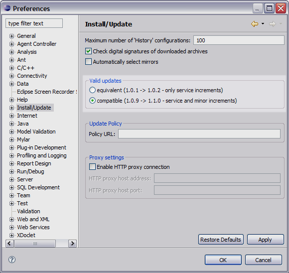

By default, the Eclipse Update Manager will not update you to a new minor release. In other words, if you have release 1.0.3 installed, it will update you to a 1.0.4 release, but it will not update you to a 1.1.0 or 1.2.0 release. You can change this in the Eclipse preferences. Open the Eclipse Preferences and click on the Install/Update option:
Change the preference as shown so that Eclipse will update you to a new minor release. This will be needed to move from either the 1.0.x or 1.1.x release to 1.2.0.